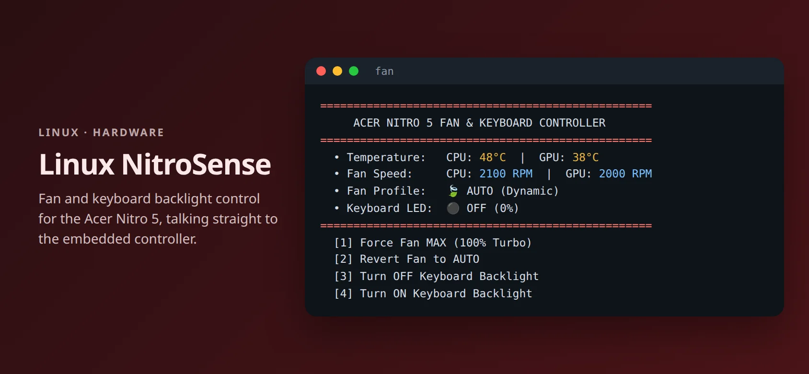

LINUX TOOL · 2026
Linux NitroSense
A lightweight replacement for Acer NitroSense on Linux: fan modes, keyboard backlight, and temperature readouts for the Acer Nitro 5.
- Python
- Bash
- Linux
- Embedded Controller
- systemd

Why I built it
Acer’s NitroSense app only runs on Windows. On Linux my laptop had no way to force the fans or turn off the red keyboard light.
So I mapped the embedded controller registers myself and wrote a small tool that uses no background daemon and no out-of-tree kernel driver.
What it does
Fan modes
Switch between automatic and 100% turbo fans for gaming or rendering.
Keyboard backlight
Turn it on or off, and turn it off automatically at boot.
Live telemetry
CPU and GPU temperatures and real fan RPM.
No sudo prompts
A single fan command with an interactive menu or direct subcommands.
How it works
- Embedded controllerReads and writes EC registers through the in-kernel ec_sys driver (/sys/kernel/debug/ec/ec0/io).
- Register mapMapped fan mode, performance profile, backlight, RPM, and temperature addresses for the AN515-56.
- systemdA boot service turns the keyboard backlight off on startup.
- InstallerSets up the command, passwordless access, and ec_sys write support; uses 0% CPU when idle.
GitHub
github.com/Phan-Trong-Hau/linux-nitrosense